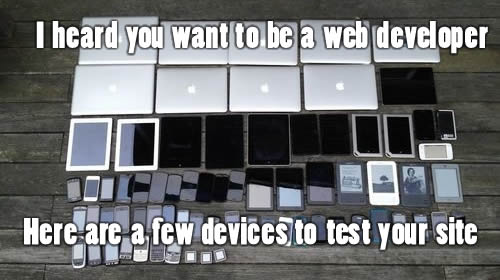

Ting Web UI
简洁、直观、强悍、跨浏览器的前端开发框架，让web开发更迅速、简单。
简洁、直观、强悍、跨浏览器的前端开发框架，让web开发更迅速、简单。
为图片提供圆角、圆形、缩略图边框以及响应式缩放等样式。
使用 .img-rounded 为图片添加圆角。
<img src="../images/bootstrap.jpg" class="img-rounded img-responsive"/>
使用 .img-circle 将图片裁剪为圆形，适合头像等场景。需确保图片宽高一致。

<img src="../images/github.jpg" class="img-circle" width="200" height="200"/>
使用 .img-thumbnail 为图片添加边框与内边距，形成缩略图效果。

<img src="../images/devices.jpg" class="img-thumbnail img-responsive"/>
.img-fluid — 图片宽度始终占满容器，高度自动缩放，适合栅格布局。.img-responsive — 图片在容器不够宽时自动缩小（max-width: 100%），不会超出容器也不会强制拉伸。